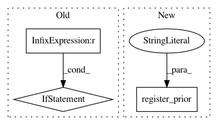

2185f24dda7b33194d4240b2a6301230ce1cd7f5,gpytorch/kernels/spectral_mixture_kernel.py,SpectralMixtureKernel,__init__,#SpectralMixtureKernel#Any#Any#Any#Any#Any#Any#,69
Before Change
if mixture_means_prior is not None or mixture_scales_prior is not None or mixture_weights_prior is not None:
logger.warning("Priors not implemented for SpectralMixtureKernel")
if len(batch_shape) > 1:
raise RuntimeError("SpectralMixtureKernel does not yet support multiple batch dimensions.")
// This kernel does not use the default lengthscale
super(SpectralMixtureKernel, self).__init__(ard_num_dims=ard_num_dims, batch_shape=batch_shape, **kwargs)
self.num_mixtures = num_mixtures
self.register_parameter(
After Change
)
if not batch_shape == self.batch_shape:
raise RuntimeError(
"The SpectralMixtureKernel expected the input to have a batch_size of {} "
"(based on the batch_size argument). Got {}.".format(self.batch_shape, batch_shape)
)
// Expand x1 and x2 to account for the number of mixtures
In pattern: SUPERPATTERN
Frequency: 3
Non-data size: 3
Instances
Project Name: cornellius-gp/gpytorch
Commit Name: 2185f24dda7b33194d4240b2a6301230ce1cd7f5
Time: 2019-04-02
Author: jake.gardner@uber.com
File Name: gpytorch/kernels/spectral_mixture_kernel.py
Class Name: SpectralMixtureKernel
Method Name: __init__
Project Name: cornellius-gp/gpytorch
Commit Name: d44475866914c19f23c0f8a833951f9989250334
Time: 2018-11-17
Author: balandat@fb.com
File Name: gpytorch/kernels/kernel.py
Class Name: Kernel
Method Name: __init__
Project Name: cornellius-gp/gpytorch
Commit Name: 2185f24dda7b33194d4240b2a6301230ce1cd7f5
Time: 2019-04-02
Author: jake.gardner@uber.com
File Name: gpytorch/kernels/index_kernel.py
Class Name: IndexKernel
Method Name: __init__